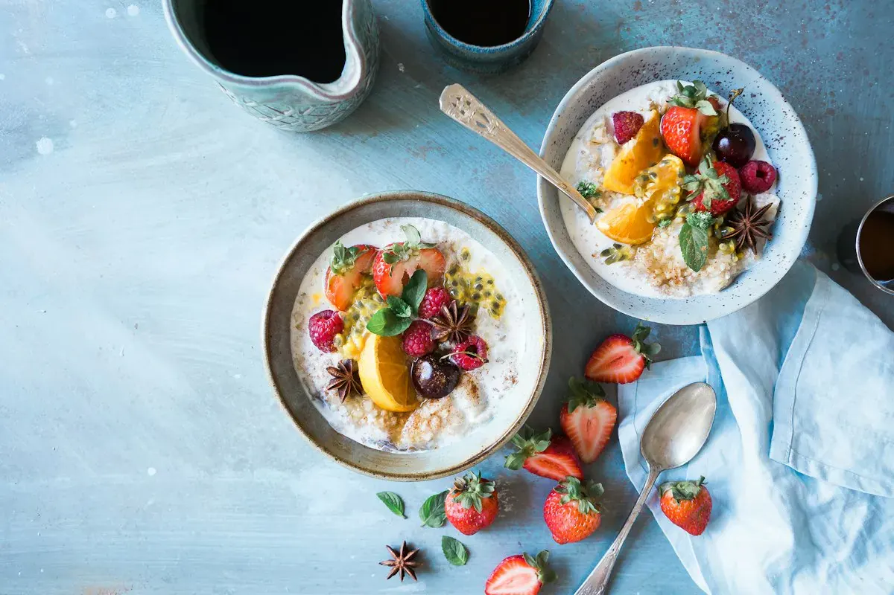

Overnight Oats with Berries

Illustrative image.
Overnight oats are less a recipe than a ratio: one part oats to one part milk, with yogurt for body and chia for thickness. Mixed in a jar in five minutes, they are ready to eat in the morning and need no cooking at all.
This version makes two jars and uses Greek yogurt for a creamy, slightly tangy base. The berries go in just before eating so they stay firm.
Ingredients
- 1 cup old-fashioned rolled oats
- 1 cup milk (dairy or a milk alternative)
- 1/2 cup plain Greek yogurt
- 1 tbsp chia seeds
- 1 tbsp honey or maple syrup
- 1/2 tsp vanilla extract
- Pinch of salt
- 1/2 cup mixed fresh berries, plus more for topping
Instructions
- In a jar or container with a lid, combine the oats, milk, yogurt, chia seeds, honey, vanilla, and salt. Stir well until everything is evenly combined.
- Gently fold in the berries, or layer them in for a prettier presentation.
- Seal the container and refrigerate overnight, or for at least 6 hours, until the oats have softened and thickened.
- In the morning, give it a good stir, top with extra fresh berries and a drizzle of honey, and enjoy cold.
Why this recipe works
The oats soften overnight without heat, and chia seeds absorb liquid and give the mixture a thicker, more pudding-like texture. Greek yogurt adds protein and a little acidity, which keeps the bowl from tasting flat.
Tips for success
- Use old-fashioned rolled oats. Instant oats turn to paste and steel-cut oats stay hard.
- Stir well before refrigerating, then stir again in the morning and add a splash of milk if it is too thick.
- Add the berries at serving time so they do not bleed colour through the oats.
Substitutions that work
- Any milk works, including almond, soy and oat milk.
- Maple syrup can replace the honey, and a pinch of cinnamon is a good addition.
- Skip the chia and add a tablespoon of ground flaxseed instead, or leave both out for a looser texture.
Storage and make-ahead
Keep covered in the refrigerator for up to four days. They thicken over time, so loosen with milk before eating. Overnight oats can be frozen, though the texture becomes slightly grainy after thawing.
Serving suggestions
Eat straight from the jar, or tip into a bowl and top with extra berries, nut butter or toasted nuts. It is a complete breakfast on its own and travels well to work.
Getting the ratio right
The base ratio is one part oats to one part milk by volume, and everything else adjusts from there. More milk makes a looser, drinkable oat; more yogurt makes it thicker and tangier. Chia seeds absorb roughly ten times their weight in liquid, so a tablespoon per portion noticeably thickens the mix overnight. Use a jar with a lid and fill it no more than three quarters full, leaving room to stir in the morning. If the oats feel stiff, add milk a spoonful at a time rather than pouring, and stir well before you decide the texture is wrong.
Frequently asked questions
How long do overnight oats last?
About four days in the refrigerator, covered. After that the texture gets thick and the flavour starts to dull.
Can I use quick oats?
Yes, and they soften faster, but the texture is softer and less chewy. Rolled oats give the best result.
Do I have to use yogurt?
No. Replace it with a little extra milk and a spoonful of nut butter, or leave it out entirely and reduce the milk slightly.